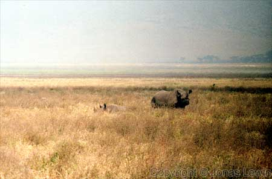
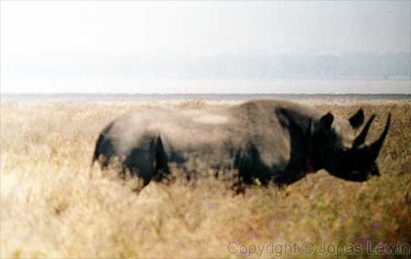

Rhino.
|
If
you are down wind of this large animal, it will probably not see you. Just
be quiet. When we where watching these 2 Rhinos, we where 13 cars standing
and watching them. Then came the 14th car, with only Italians. They where
very noisy, and the Rhinos fled a long time before the Italians ever got to
where we where standing. This goes for many animals that you want to watch. Don't make any noise. You will be able to get much closer then. |